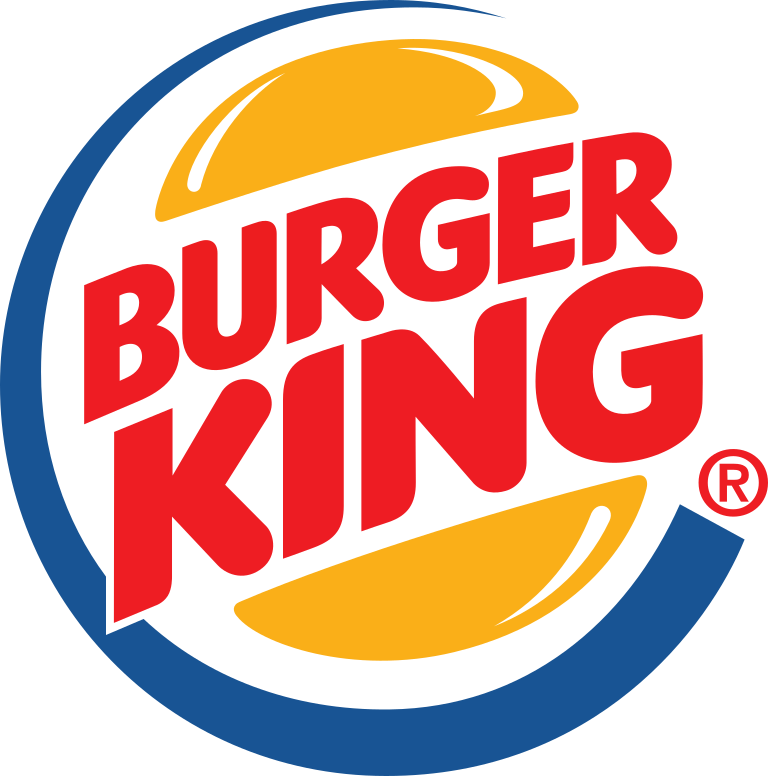

Stagiaire en Analyse Statistique | Première Agence de Micro-Finance (PAMF) | Côte d'Ivoire
Développer un système de notation pour évaluer le profil de risque des clients, afin d'optimiser la gestion des risques. Mettre en place des tableaux de bord pour assurer le suivi des indicateurs clés.

Agent Polyvalent | Burger King | France - Lisieux
En tant qu'agent polyvalent chez Burger King (BK), j'assurais un service client de qualité en prenant les commandes avec précision et en fournissant un service rapide au comptoir et au drive. J'étais également responsable de la préparation des repas selon les normes de l'entreprise et du maintien de la propreté du restaurant, tout en gérant efficacement les stocks et en participant aux sessions de formation pour améliorer mes compétences.